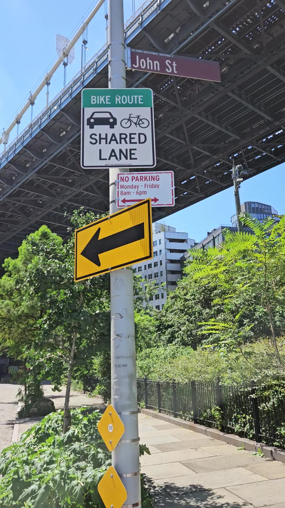
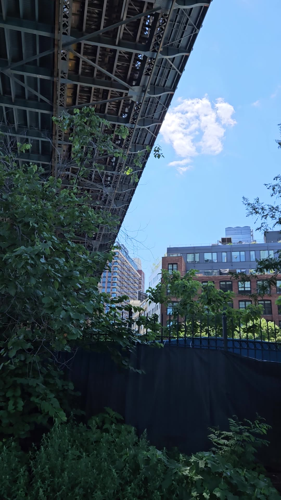
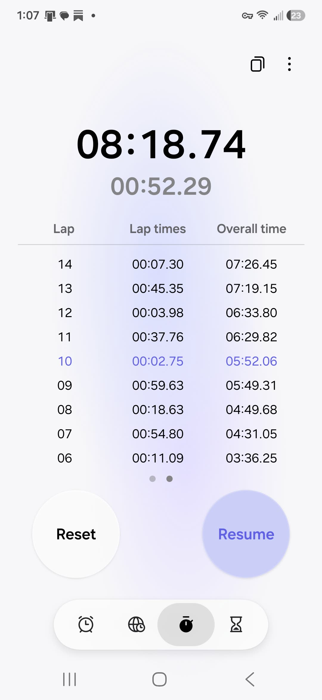
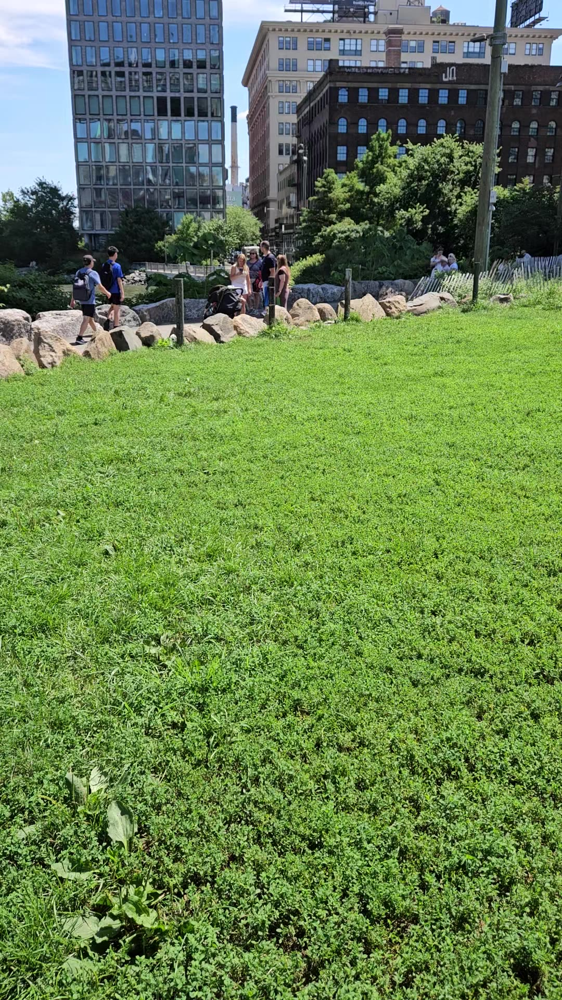
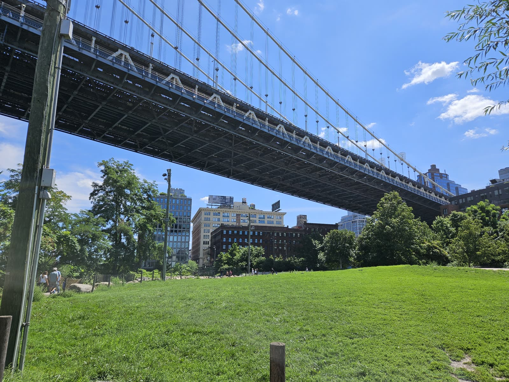
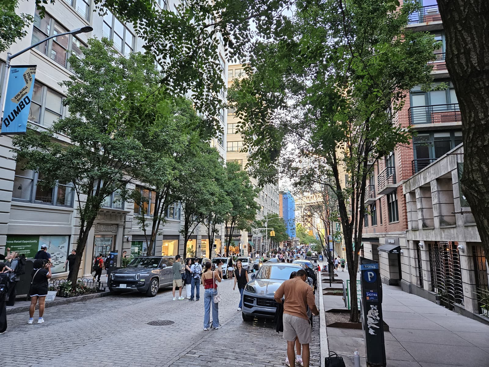
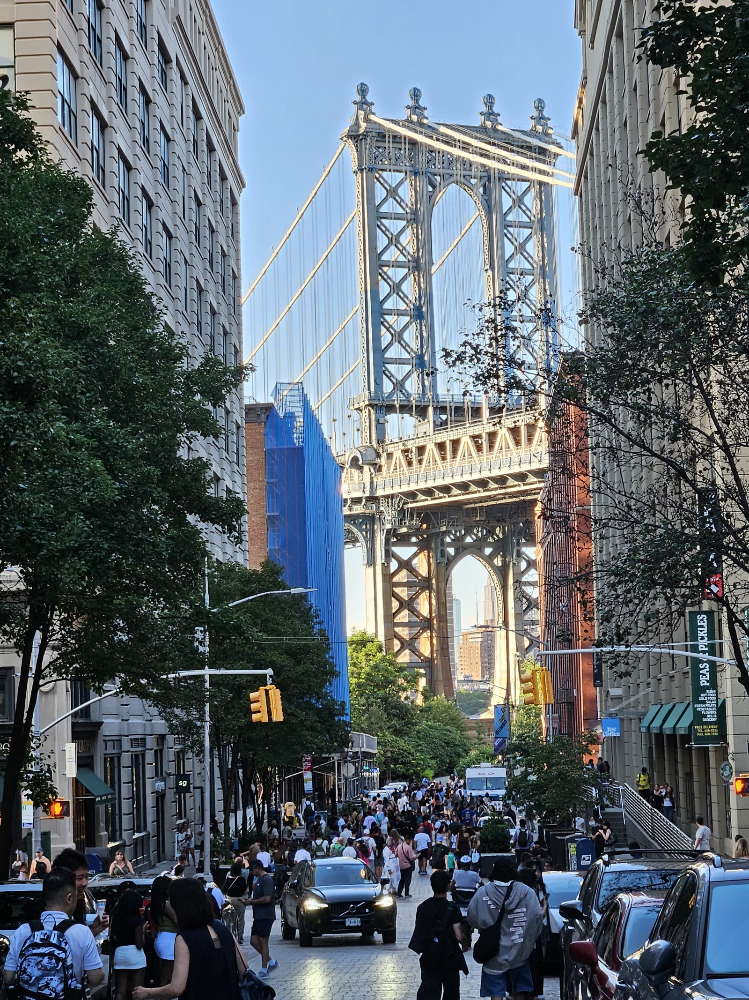

Document 10 · field media
On 3 and 4 August 2026 an observer stood under the bridge in DUMBO with a consumer Samsung Galaxy S23+ and filmed the buildings that wall the corridor on either side of the deck. Separately, an hour later, he stood with a stopwatch and tapped a lap each time train noise started and stopped. This page is everything that came back and everything that can and cannot be concluded from it.
Nothing on this page is a decibel, and the two instruments are never joined. The video exists to show the buildings that form the echo chamber near the water — its audio track is a by-product, not an acoustic measurement. The stopwatch is an independent sample taken 62 minutes later with no overlap. Numbers from one are not carried to the other anywhere below.
The obvious thing to do with a phone recording of a loud place is to read a level off it. That is refused here, and the refusal is the most important methodological statement on the page.
What survives all three is timing. AGC changes how loud a sample is; it does not change when the sample was written. Onsets, durations, gaps and rates are recoverable from a file whose absolute scale is worthless, and every quantitative claim below is one of those four.
The unit on every chart here is dBFS — decibels relative to digital full scale, a number about the file. It is never dB(A). The MTA's measured dB(A) figures used elsewhere in this repository are from a calibrated meter and are not comparable to anything on this page.
A measurement can only be read for the purpose it was taken for. These statements of intent arrived after the first analysis run and they invalidated part of it. That is the correct order of events and not a failure of it — an analyst who never asks what a capture was for will happily compute a precise number from a file that cannot carry one.
| capture | the operator's statement | what follows for this page |
|---|---|---|
| the stopwatch | The stopwatch is an independent sample. There is no correlation between it and any video or audio also supplied. | No quantity derived from the stopwatch may be compared with any quantity derived from the audio. The file timestamps agree: the last video ends at 11:56:36 and the stopwatch does not start until 12:59:00. |
| the stopwatch | It is somewhat imprecise because a human operator decided when to start and stop the stopwatch. It was an indicator that there is a very small amount of time between noise from the train tracks. I will redo this with better documentation. | The stopwatch is an indicator, not an instrument. Its own author has scheduled its replacement. |
| the video | The video was primarily used to show the buildings that create an echo chamber around the bridge near the water. That was the main value of them. It was not to be used for audio precision. | The video is a VISUAL record of the canyon geometry. Its audio track is a by-product. It may be used to establish that the recording chain misbehaved; it may not be used to characterise the acoustic environment. |
| what comes next | Better audio will be captured later this week with a microphone shield and an audio meter. | The by-product audio is superseded before anything was built on it. That is the reason to demote it now rather than defend it. |
| the evening stills (20260803_190055.jpg, 20260803_190152.jpg) | The first 2 photos that are described as 'under the bridge, evening' were not taken with the same purpose. Those 2 photos are useful for showing tourists in the evening on a weekday night. The metadata on the photo shows the exact location and time. This should go into the study on the pedestrian cohort as evidence. | These two stills were NOT captured for the echo-chamber or canyon-buildings purpose. They were captured to show evening pedestrian presence on a weekday. They are read for that purpose and not for the acoustic or geometric purpose the other captures serve. They contribute to the pedestrian cohort study as direct observational evidence of presence. |
Rated 5/5. Most testimony on this page is rated 2/5, because a recollection about what happened can be wrong. These are not recollections about events — they are statements of intent from the only person in a position to know it, and no analysis can overrule them. Where they conflict with something computed here they win, and one of them did.
| file | kind | place | clock | length | sha-256 (first 16) | what ships |
|---|---|---|---|---|---|---|
| clock-screenshot_20260804_130719_Clock.jpg | screenshot | Stopwatch, paused | 2026-08-04 13:07:19 | — | 6b77c58ab84527c7 | image |
| 20260803_190055.jpg | still | Washington Street, evening pedestrians | 2026-08-03 19:00:55 | — | 505601476abb7478 | image |
| 20260803_190152.jpg | still | Washington Street, evening pedestrians | 2026-08-03 19:01:52 | — | cf64fa29ccdeac04 | image |
| grassy-knoll-20260804_120225.jpg | still | Grassy knoll, south of the bridge | 2026-08-04 12:02:25 | — | d62b709131cd74af | image |
| canyon-buildings-20260804_115319.mp4 | video | The canyon, walking | 2026-08-04 11:53:19 | 61.8 s | da4532294a3665e0 | audio poster |
| canyon-buildings2-20260804_115505.mp4 | video | The canyon, continued | 2026-08-04 11:55:05 | 46.7 s | 905cad6caa9aa119 | audio poster |
| grassy-knoll-20260804_115626.mp4 excluded | video | Grassy knoll, south of the bridge | 2026-08-04 11:56:26 | 10.3 s | 4745dba0fb3483c5 | audio poster |
The masters are not in this repository. One video is 114 MB, which is over GitHub's hard file limit, and committing the set would put a quarter of a gigabyte of phone footage into a research repository to no purpose. What ships is a poster frame and an audio track per video and a resized still per photograph. Every master is fingerprinted by SHA-256 above, so a master supplied later can be checked against what was actually analysed.
The masters total 224.7 MB and the web versions total 4.1 MB, a factor of 55×. Android names a video file at the moment recording starts and writes the container timestamp when it closes, so the clock column is the start and the two differ by the length of the clip. Every capture carried GPS and full EXIF; none of it was stripped before analysis.
| capture | chainage, m | offset from track, m | which side | nearest MTA measurement | distance to it |
|---|---|---|---|---|---|
| 20260803_190152.jpg | -124.7 | 161.9 | west-south-west | Front and Pine Street | 170 m |
| 20260803_190055.jpg | -121.6 | 159.0 | west-south-west | Front and Pine Street | 167 m |
| canyon-buildings-20260804_115319.mp4 | +74.7 | 37.6 | east-north-east | DUMBO Archway | 90 m |
| canyon-buildings2-20260804_115505.mp4 | +91.5 | 26.4 | east-north-east | DUMBO Archway | 100 m |
| grassy-knoll-20260804_115626.mp4 | +138.3 | 27.0 | west-south-west | DUMBO Archway | 139 m |
| grassy-knoll-20260804_120225.jpg | +163.6 | 81.6 | west-south-west | DUMBO Archway | 178 m |
The frame is the one the rest of this repository already uses: distance along the fitted track axis, and perpendicular distance from it. Chainage zero is the DUMBO Archway, which is itself one of the four points the MTA measured. The axis is fitted to 21 OpenStreetMap nodes tagged as subway on the bridge and is straight to within 12.5 m over the 1757 m it was fitted across; every capture here falls inside that run, so no offset above is an extrapolation.
The compass direction is derived, not typed. The first version of this table hard-coded “north-east” for a positive offset. Probing the fitted axis showed positive offset actually points east-north-east. A refit that flips the sign would have silently inverted every row, so the bearing is now read off the axis at build time.
Two of the video captures stand 26 m and 27 m from the track. Three of the four points the MTA measured are further from it than that. This is not a claim that the captures are better sited — they carry no calibration and the MTA's do — but it does mean the geometry is not the reason nothing here can be compared with a decibel.
An excursion is a stretch at least 1.5 s long that sits at least 6 dB above the clip's own rolling median, with excursions less than 1.5 s apart merged. It is a level excursion, not a train: the detector cannot tell a train from a truck, and does not try to.
The canyon, walking · 61.8 s · stereo AAC at 48,000 Hz, decoded to 16,000 Hz mono-per-channel for analysis · 2 level excursions detected
| start, s | end, s | duration, s | rise above the clip median, dB | |
|---|---|---|---|---|
| 0.03 | 10.12 | 10.10 | +9.6 | complete |
| 56.78 | 61.75 | 4.98 | +10.9 | cut off by the end of the clip |
The canyon, continued · 46.7 s · stereo AAC at 48,000 Hz, decoded to 16,000 Hz mono-per-channel for analysis · 2 level excursions detected
| start, s | end, s | duration, s | rise above the clip median, dB | |
|---|---|---|---|---|
| 10.38 | 14.78 | 4.40 | +7.6 | complete |
| 16.53 | 18.55 | 2.02 | +7.6 | complete |
Grassy knoll, south of the bridge · 10.3 s · stereo AAC at 48,000 Hz, decoded to 16,000 Hz mono-per-channel for analysis · 0 level excursions detected
This clip contributes nothing to any number on this page. See the next card.
After the recordings were made, the operator volunteered two recollections about the lawn clip:
Both are testable in the file, and both tests were written after the recollection and are free to disagree with it. Recording a recollection as evidence would be circular; recording it as a hypothesis and then testing it is not.
The first pass found neither. There was no drop-out at all — the clip sits inside a 5.9 dB band for its whole length — and no sustained sign change between the channels. That looked like a clean negative until the test was checked for a blind spot, and it has one: a within-clip test measures each clip against its own median, so an obstruction that never lifts moves the baseline with it and becomes invisible.
So a second, between-clip test was written, on three indicators that move in known and different directions for a hand over a microphone versus a genuinely quiet site. A hand raises the noise floor, compresses the dynamic range, and decorrelates the two channels. Quiet lowers the floor and leaves the channels agreeing.
| clip | noise floor, dBFS | dynamic range, dB | channel correlation | indicators flagged |
|---|---|---|---|---|
| grassy-knoll-20260804_115626.mp4 | -17.9 | 3.5 | 0.826 | 3 of 3 |
| canyon-buildings-20260804_115319.mp4 | -22.9 | 10.8 | 0.920 | 0 of 3 |
| canyon-buildings2-20260804_115505.mp4 | -24.2 | 7.6 | 0.885 | 0 of 3 |
All three picked the same clip, unanimously. All three indicators point at the same clip, grassy-knoll-20260804_115626.mp4. That is what a microphone obstructed for the WHOLE recording looks like, and it is the opposite of what a quiet site looks like - a quiet site lowers the floor and leaves the two channels agreeing. It is consistent with the operator's account and it is not proof of it: three indicators over three clips cannot carry a p-value, and no significance is claimed. The consequence does not depend on resolving the cause - the clip is excluded either way.
The clip is excluded at source, before any statistic is computed — not caveated afterwards. A caveat below a number does not stop the number being quoted. The audio span on this page is 108.4 s, not 118.7 s, because of it.
This finding is unaffected by the withdrawal below, and it is worth being clear why. It is a statement about the recording chain, not about the site — it says a microphone misbehaved, which is exactly what a by-product audio track can establish. It does not depend on the stopwatch, on any duty cycle, or on the audio being an acoustic measurement of anything.
The lawn clip is closer to the track than either canyon clip and detected nothing. That is the shape of a finding, and it is not one. At 57.7 trains an hour the expected number of trains inside a 10.3 s window is 0.16, so the chance of catching none at all is 84.8% regardless of how loud the site is.
| clip | analysed, s | trains expected | excursions observed | chance of zero by luck alone | |
|---|---|---|---|---|---|
| canyon-buildings-20260804_115319.mp4 | 61.8 | 0.99 | 2 | 37.2% | informative |
| canyon-buildings2-20260804_115505.mp4 | 46.6 | 0.75 | 2 | 47.3% | informative |
| grassy-knoll-20260804_115626.mp4 | 10.3 | 0.16 | 0 | 84.8% | carries no information |
A null in a clip shorter than a headway is not a finding. Of the clips here, 1 had a better-than-even chance of containing no train at all regardless of how loud the site is, so their zero counts carry no information about the site and are not used for anything.
The stopwatch records a lap every time the observer judged train noise to start or stop. The file therefore contains fourteen durations that alternate between noise and quiet — but it does not record which kind the first lap was, and the observer did not write it down. Both interleavings are arithmetically valid and they give opposite answers.
| events counted | 7 |
|---|---|
| mean event | 12.8 s |
| median event | 7.3 s |
| event spread (CV) | 1.060 |
| gap spread (CV) | 0.227 |
| implied cycle | 63.8 s |
| implied rate | 56.4/h |
| implied duty cycle | 20.1% |
| events counted | 7 |
|---|---|
| mean event | 51.0 s |
| median event | 45.4 s |
| event spread (CV) | 0.227 |
| gap spread (CV) | 1.060 |
| implied cycle | 63.8 s |
| implied rate | 56.4/h |
| implied duty cycle | 79.9% |
The tie is broken on a property of the railway rather than a preference. Headway is scheduled and event duration is not. Trains are dispatched to a timetable, so the gaps between them should cluster; how long a given train sounds loud depends on its speed, its length, which of four tracks it is on and where the observer is standing, so the events should scatter. The reading whose quiet intervals cluster more tightly is the reading in which the quiet intervals are really quiet intervals.
The two readings differ by a factor of 4.7× in exactly that respect, which is not a marginal call. Under the chosen reading the gaps between trains have a coefficient of variation of 0.227 and the events scatter at 1.060; under the rejected reading those two numbers swap over, which would mean the railway runs to no timetable and every train sounds loud for almost exactly the same length of time.
One event does not fit, and it is not being hidden. Lap 2 is 41.09 s, against 18.63 s for the next longest of the seven and a median of 7.3 s — a 5.6× outlier on the median. It is the first event of the session, which is where a settling error would sit: someone starting a stopwatch on a train already passing, or missing the tap that ends the first event and catching the one that ends the second. Both mean the duration spans two real intervals rather than one. The mean of the chosen reading is 12.8 s and the median is 7.3 s, a gap this one lap almost entirely accounts for, which is why the median is quoted beside the mean everywhere it matters. The lap was not dropped and the reading was not re-chosen to make it go away.
The tie-break now rests on that one argument alone. It used to have a second, apparently independent prop — an audio duty ceiling that seemed to rule the other reading out. That prop is withdrawn in the next card but one, so the confidence attached to the pairing, and to the event durations and duty cycle that hang off it, drops with it. Rated WEAK.
The operator's own reading of the session points the other way, and is recorded rather than resolved. The operator's own reading of the session is that it showed 'a very small amount of time between noise from the train tracks'. That is ambiguous between two things this stopwatch cannot separate: short GAPS, which would favour the rejected pairing, or a short CYCLE, which is pairing-independent and is already established at 63.8 s. It is recorded rather than resolved.
Only the cycle is pairing-independent. The cycle, and therefore the event rate, is identical under both pairings. It is the only quantity here that does not depend on the tie-break, and it is the only one carried forward. The operator has stated this will be re-run with documentation of which tap was which. When that happens the tie-break stops being an inference and this section is replaced, not amended.
The audio was analysed without reference to the stopwatch, and it refutes the reading that was rejected. The rejected reading requires this corridor to be under train noise about 80% of the time… the duty cycle never exceeds 44% at any detection threshold tested.
That is withdrawn. It was the strongest-sounding result on the page and it was not a result at all.
It required the audio and the stopwatch to be measuring the same thing. They are not, for two independent reasons, either of which is sufficient.
First, they do not overlap. The operator states plainly that the stopwatch is an independent sample with no correlation to any video or audio supplied. The file timestamps say the same thing without being asked: the last audio-bearing capture ends at 11:56:36 and the stopwatch does not start until 12:59:00.
| from | to | |
|---|---|---|
| audio (3 video clips) | 11:53:19 | 11:56:36 |
| stopwatch | 12:59:00 | 13:07:19 |
| gap between them | 62 min, zero overlap | |
A duty cycle measured in one window places no constraint on a duty cycle in another window an hour away. The arithmetic was correct and the inference was not.
Second, and independently, the video was never an acoustic instrument. Its purpose was to record the buildings that form the echo chamber near the water. The audio came along with it. A by-product track shot while walking cannot characterise the acoustic environment no matter how carefully it is processed, and it should not have been asked to.
What survives is narrower and it is stated narrowly. Each instrument constrains itself. The sweep below is kept because it shows why a single duty figure from uncalibrated audio should never have been quoted at all — on the same three files it runs from 44% down to zero depending only on where the threshold is put.
Every curve here is the same audio. The only thing changing is how far above each clip's own floor a sample has to sit before it counts as loud. The answer moves across the whole available range.
This is published as a caution, not as a measurement. Any duty cycle quoted from uncalibrated consumer audio is a statement about a threshold somebody chose. This page quoted one. It should not have.
The chosen reading counts 7 events in 446.4 s, which is 56.4 an hour. The MTA's own schedule for the same weekday window puts 8 trains across the bridge, or 57.7 an hour.
Seven events is a small sample. The 95% interval on a Poisson count of seven runs from 13.8 to 99.0 an hour, and the scheduled rate sits inside it. Seven events is a small sample and the interval is correspondingly wide. This rules out gross error - it does not establish agreement to a few per cent.
This is the only figure on the page that touches an external source, and the direction of the check matters: it was possible for the observed rate to land outside the interval, which would have said the stopwatch reading was wrong. It did not. That is weak positive evidence, and it is reported as weak.
The video was captured to record the buildings that form the echo chamber around the bridge near the water. That is what it is used for here.





This is the durable contribution of the session, and it is visual rather than acoustic. The operator's stated purpose for the video was to show the buildings that wall the corridor on both sides of the deck near the water — the geometry that turns a passing train into a reverberant event instead of one that disperses.
That geometry is the subject of the noise canyon page, which until now drew it entirely from surveyed footprints and OpenStreetMap ways — 76 buildings extruded around an alignment, with nobody having stood in it. These frames are the first photographic record in this repository of the thing that page models. They do not measure it. They show that the modelled canyon and the built canyon are the same place.
The poster frame of the first canyon clip puts a John St / DUMBO Historic District street sign directly under the bridge deck, fixing that recording against a street name rather than a coordinate the reader has to trust. The bridge underside fills the top third of the frame.
The lawn frame is the only image in this repository that shows the receptor rather than the source. There are three separate walking groups in it and one has a pushchair. That is not a measurement and it is not a count — a single frame cannot be either — but the population this investigation models from turnstile arithmetic is visible in it, doing the thing the model says it does, under the deck.
People appear in two of these frames at a distance, in a public park, incidentally and unidentifiably. The programme's own ethics position in Document 5 is that this work argues for the interests of the people it would incidentally record, so it carries that burden voluntarily: no frame in this card was selected for a person in it, no face is resolvable at the published size, and the audio published alongside carries no intelligible speech.
Reassigned by the operator's statement of intent from the echo-chamber material to the pedestrian cohort study.


These two frames are read for a different purpose from everything else on this page, and not because the analysis found something in them. The operator states they were captured to show evening pedestrian presence on a weekday night. That is a statement of intent, it is rated 5/5, and nobody else is in a position to make it — which is why it moves the frames out of the echo-chamber material above.
They were shot 57 seconds and 4.3 m apart, at 19:00:55 and 19:01:52 on Monday 3 August 2026, looking north up Washington Street toward the Brooklyn tower. They are the first direct observation of pedestrian presence anywhere in this investigation. Every presence figure before them was inferred from turnstile arithmetic and a fitted survival function.
The two frames cannot be compared with each other. The EXIF puts the first at a 35 mm-equivalent focal length of 23 mm and the second at 69 mm with a digital zoom ratio of 3.63 — the wide camera, then the telephoto. Because the street runs straight at the bridge, the narrower frame does not show a smaller scene; it shows a longer one. More people in it means a longer sightline, not a denser crowd, and neither frame yields a density.
What they support is a floor: more than a hundred separable figures stand in the telephoto frame before the crowd merges into a mass that no published resolution can resolve. They do not support a rate, a dwell time, a cohort split, a typical evening, or any corridor total. The full account of what they establish and what they do not is in section 10.1 of the document.
These frames, unlike the rest, were taken because people were in them — so the blanket claim that no frame here was selected for a person does not cover them, and it is not made. What is undertaken instead is narrower and checkable: counts are reported rather than faces, no face is resolvable at the published size, the masters are not committed, and no crop, enlargement or annotation that would make any individual identifiable is published anywhere in this repository.
The capture list requested an audio recording at Adams and John Street as a distinct file. No audio-only file exists in the material that was handed over. That material appears instead to be inside the canyon videos: both were shot at 40.7044, −73.9885, which is the John Street block, and the poster frame of the first one shows the John Street sign directly. Their audio tracks are extracted and published above as .m4a files, so the recording exists — it is simply not a separate capture.
This is recorded rather than quietly reconciled because the difference matters for what comes next. A separate audio-only capture would have been made with the phone held still and pointed; a video's audio track was made by someone walking and turning. The second is worse for anything spectral and no worse for anything temporal, which is all that is claimed from it here.
| capture | what Document 5 asked for | status |
|---|---|---|
| C1 — spectrum | Third-octave spectrum of a pass-by, to replace the invented spectrum in the acoustic demonstration | Not satisfied. No windscreen, unknown microphone response, AGC active. A spectrum from this material would be confidently wrong. |
| C2 — envelope | A measured pass-by envelope, to open the closed loop in section 1.7 | Partly, and not usefully. Four excursion envelopes were recovered, but AGC deforms exactly the rise and decay that section 1.7 assumes a shape for. The durations are usable; the shape is not. |
| C3 — headway | Ninety minutes of event timing, needing no calibration at all | Partly. 446.4 s of stopwatch and 108 s of audio against the ninety minutes asked for. It is the capture this material comes closest to satisfying, and it is the one that needed the least equipment. |
| C4 — attribution | Acoustic events matched to identified trains via GTFS-realtime | Not attempted. Requires a live feed poller running beside the recorder. |
| C5 — photogrammetry | Structure-from-motion imagery of the under-deck | Not satisfied. Four stills and two walking videos are not a photogrammetric set. |
Document 5 was written before any of this existed and specified five captures. This session satisfies none of them completely and two of them partly. That is the honest score, and it is worth stating plainly because the temptation with first field data is to let its existence stand in for its adequacy.
Two scripts, both in pedestrian-site-visits/. build_media_data.py decodes the audio, detects the excursions, runs the obstruction and detectability tests, places every capture against the alignment, parses the stopwatch and writes media-data.json. build_media_page.py renders this page from that JSON and computes nothing.
The master files are not in the repository — one of them is over GitHub's hard file size limit — so the first script will not run from a clean clone without them. Every master is fingerprinted by SHA-256 in the inventory above, so a master supplied later can be checked against the one actually analysed. Everything the page displays is in the committed JSON.
{kind=link}
{kind=link}
{kind=link}
{kind=link}
{kind=link}
{kind=link}
{kind=link}